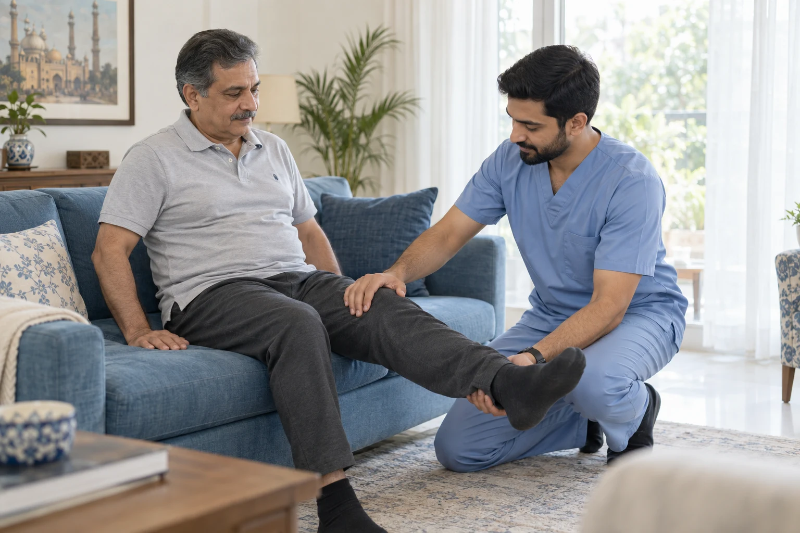
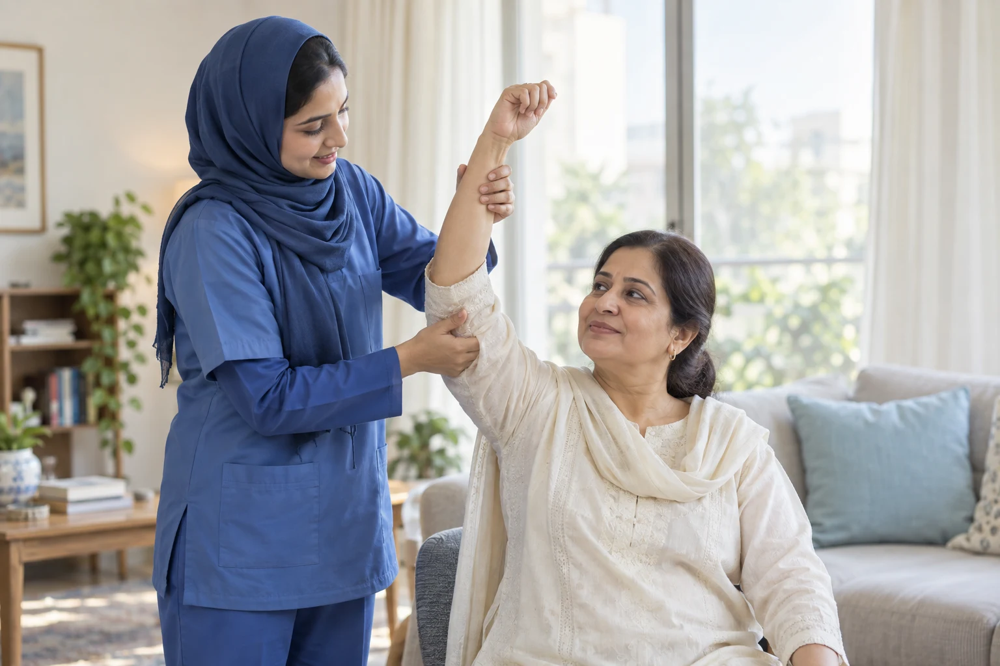
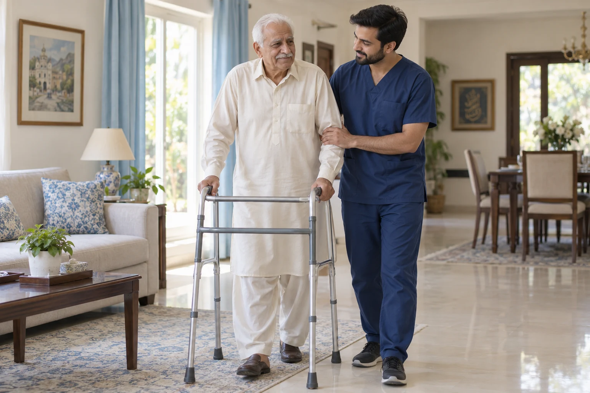

Get in touch
Tell us your area and the kind of support you are looking for.
Healing hands, lasting results.
Get back to the everyday moments that matter. Personalised physical therapy, delivered with care in the comfort of your home.

From everyday discomfort to rehabilitation,
find support for your next step.

Pain & mobilityPersonalised care for the discomfort that gets in the way of your everyday life.
Explore treatment Pain & mobilityBuild confidence in everyday movement with support for painful or stiff joints.
Explore treatment Recovery & rehabilitationStep-by-step support as you work towards movement and confidence after surgery.
Explore treatment
Recovery & rehabilitationPatient, practical support for movement, balance and everyday independence.
Explore treatment Recovery & rehabilitationThoughtful care at home, focused on strength, balance and the things that matter to you.
Explore treatment Pain & mobilityA considered approach to getting back to the activities you enjoy.
Explore treatmentWe believe care starts with listening. Your routine, your comfort and your goals shape the way we approach your treatment.
HOWA brings physical therapy to your doorstep in Lahore, making it easier to get individual attention in a space you know.
Tell us your area and the kind of support you are looking for.
We contact you to confirm availability, fees and a suitable time.
Your physiotherapist assesses your needs and plans the next steps with you.
Explore conditions, learn what physiotherapy can do,
and get to know gentle movement exercises.
Clear information for a more confident care journey.
02 / MOVEGentle exercises and guidance on getting started.
Yes. HOWA currently provides home visits only. Contact us with your area in Lahore so we can confirm availability before arranging a visit.
Your physiotherapist will discuss your concerns and goals, assess your movement and explain a personalised care plan. Keep any relevant reports or surgical instructions available.
Prepare your visit request on this website and send it through WhatsApp, or call 0311-0332314. Your appointment is confirmed only after our team contacts you.
Please contact us for current session fees and available packages. We will confirm the cost and visit arrangements with you before booking.
This depends on your assessment, condition and goals. Your physiotherapist will discuss a suitable plan with you and review it as you progress.
Personalised physiotherapy. A familiar environment. You at the centre.